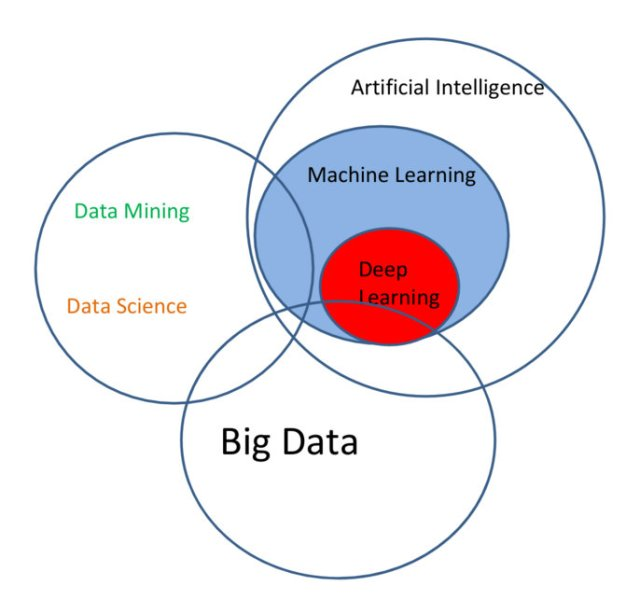
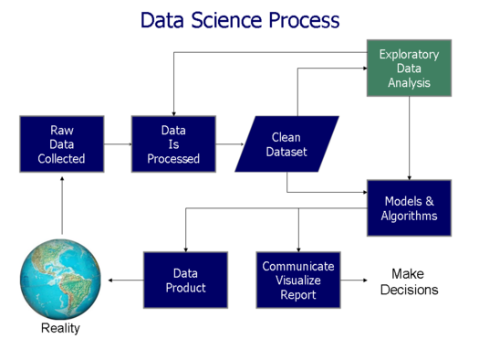

- A process of inspecting, cleansing, transforming, and modeling data with the goal of discovering useful information, suggesting conclusions, and supporting decision-making.
- Data Analysis Facets.
- 描述性统计分析(Descriptive Statistics Analysis) & 推断式分析(Inferential Statistics Analysis)
- 探索性数据分析(Exploratory Data Analysis (EDA)) & 验证性数据分析(Confirmatory Data Analysis (CDA))
- Univariate / Bivariate / Multivariate Analysis
- Predictive Analytics
Data Analysis Foundation
Overview
Ma Ming
Big Data Platform Architect and Data Scientist.
What is Data Analysis?
Data Mining and Machine Learning
- Data mining is a particular data analysis technique that focuses on modeling and knowledge discovery for predictive.
- Data mining is the analysis step of the "knowledge discovery in databases" process, or KDD
- Machine Learning
- subfield of computer science
- gives "computers the ability to learn without being explicitly programmed
- explores the study and construction of algorithms that can learn from and make predictions on data
- subfield of computer science
Data Related Terms

Data Science Process

Data,Information and Intelligence

Data Science EcoSystem
- Databases
- RDBMS
- NoSQL
- RDBMS
- Big Data Platform
- Map-Reduced based
- Streamed Computing
- Iterable Computing
- MPP
- Map-Reduced based
- Tools
- ETL tools
- Matlab, Octave
- R, Python
- SPSS, SAS
- RapidMiner, KNIME
- ETL tools
Visulization

Business Model
- Data as a Service
- Information as a Service
- Answer as a Service
Data Analysis Approach
- Classical Method
- Exploratory Data Analysis
- Bayesian Analysis
- Methdology
- CRISP-DM
- SEMMA
- CRISP-DM
CRISP-DM
- CRISP-DM : CRISP-DM (cross-industry standard process for data mining), 即为"跨行业数据挖掘过程标准".
- business understanding-- 业务理解
- data understanding-- 数据理解
- data preperation-- 数据准备
- modeling-- 建立模型
- evaluation-- 评价
- deployment-- 部署
- business understanding-- 业务理解
SEMMA
- SEMMA : Sample, Explore, Modify, Model, and Assess
- Sample ── 数据取样
- Explore ── 数据特征探索、分析和预处理
- Modify ── 问题明确化、数据调整和技术选择
- Model ── 模型的研发、知识的发现
- Assess ── 模型和知识的综合解释和评价
CRISP-DM VS SEMMA
- CRISP-DM是从一个数据挖掘项目执行的角度谈方法论,
SEMMA 则是从对具体某个数据集的一次探测和挖掘的角度来谈方法论,
CRISP- DM的考虑的范围比SEMMA要大。CRISP-DM关注商业目标、数据的获取和管理, 以及模型在商业背景下的有效性。 - CRISP- DM认为数据挖掘是由商业目标驱动的，同时重视数据的获取、净化和管理;
SEMMA 不否认商业目标，但更强调数据挖掘是一个探索的过程，在最终确定模式和模型前, 要经过充分的探索和比较。 - 哪种方法占主流?
Question : What a good data analysis come from?
A good data analysis come from a good question.